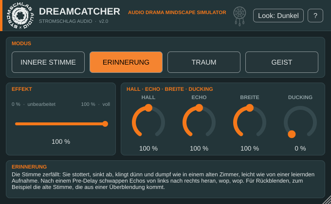
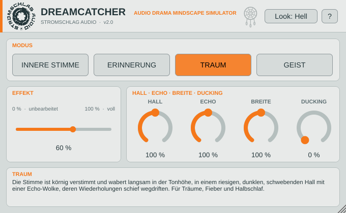

DREAMCATCHER
Audio Drama Mindscape Simulator · Stromschlag Audio
Ein VST3-Insert-Effekt für Hörspielproduktionen. Er lässt eine Stimme klingen, als käme sie von innen: als innere Stimme, als Erinnerung oder Rückblende, im Traum und als Geist mit echtem Reverse-Hall. Ein Fader blendet von der normal klingenden Stimme bis zum vollen Effekt, auch über die Zeit per Automation.
⬇ Download (Windows, VST3)Was es kann
- Innere Stimme: nah, im Kopf, schmal, in einem winzigen, engen Raum mit einem Hauch Echo und weicheren Höhen.
- Erinnerung / Rückblende: die Stimme stottert, sinkt ab und klingt dünn und dumpf in einem kleinen, alten Zimmer, leicht wie von einer leiernden Aufnahme; nach einem Pre-Delay schwappen Echos von links nach rechts heran und schwellen an (wop, wop).
- Traum: körnig verstimmt, die Tonhöhe wabert langsam, in einem riesigen, dunklen, schwebenden Hall mit einer Echo-Wolke, deren Wiederholungen schief wegdriften.
- Geist: echter Reverse-Hall: Vor jedem Wort schwillt ein Geisterhall an und rückwärts gespielte Stücke saugen ins Wort hinein, dann kommt die Stimme, trocken und ohne Nachhall. Dafür meldet das Plugin in diesem Modus rund 0,6 s Latenz an die DAW, die sie ausgleicht. Am besten auf einer eigenen Spur oder Instanz.
- Ein Fader von 0 bis 100 %: 0 % ist die Stimme unbearbeitet, 100 % der volle Klang des Modus. Per Automation lässt sich der Effekt einblenden oder zurückholen, etwa wenn eine alte Stimme aus einer Überblendung kommt.
- Hall, Echo, Breite und Ducking zum Nachjustieren: vier Drehregler von 0 bis 200 %, 100 % ist der abgestimmte Klang des Modus. Im Modus Geist steuern die ersten beiden Reverse-Hall und Reverse-Echo. Breite reicht von mono bis breiter als die Lautsprecher und bleibt dabei monokompatibel. Ducking (Grundeinstellung aus) lässt die Stimme Echos und Hall herunterdrücken, solange sie spricht.
- Auch auf einem Bus: Stimme und Geräusche einer Traum- oder Erinnerungsszene bekommen gemeinsam dieselbe Behandlung und klingen wie aus einer Welt.
- Fest abgestimmt: feste Modi, kein Ausgangsregler, keine eigenen Geräusche. Das Plugin verändert nur den Klang der Stimme; Latenz gibt es nur im Modus Geist.
- Vergrößerbare Oberfläche von 50 % bis 300 %, hell und dunkel, mit Hilfe im Plugin.
Oberfläche


Mehr
Alle Regler, Anwendungsbeispiele, die Versionshistorie und den Quellcode gibt es in der README auf GitHub.